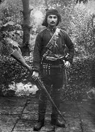
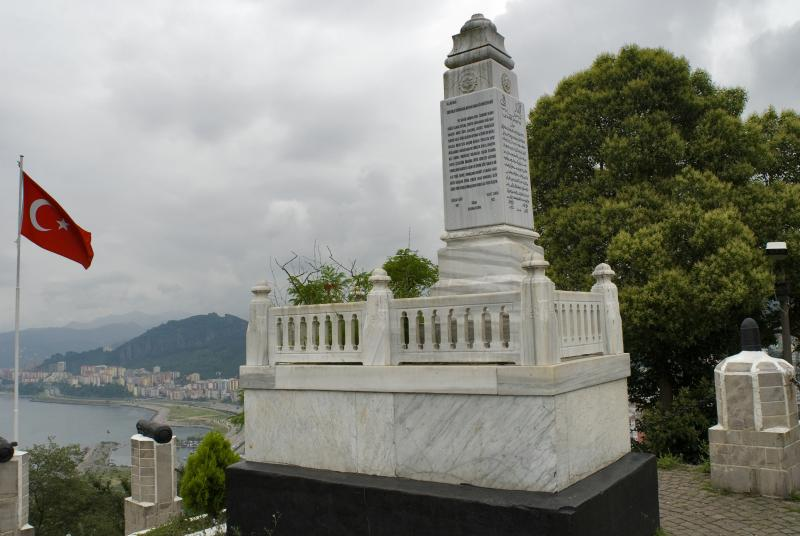

Milli Mücadele’nin Giresunlu Kahramanı:
TOPAL OSMAN AĞA
"Giresun’un bağrından kopan,
Karadeniz’in hırçın dalgaları gibi işgale direnen,
42. ve 47. Gönüllü Alayların kurucusu ve Başkomutanlık Karargah Muhafız Birliği Komutanı."
Kısa Yaşam Öyküsü ve Kahramanlıkları
1883 yılında Giresun’un Hacıhüseyin Mahallesi'nde doğan Osman Ağa, ticaretle uğraşırken Balkan Harbi’nin başlamasıyla gönüllü olarak cepheye koştu. Çatalca önlerinde sağ bacağından yaralanarak "Gazi" ve "Topal" unvanlarını aldı. Ancak bu engel, onun vatan aşkının önüne geçemedi.
.jpg)
Milli Mücadele Dönemi’ndeki Rolü
Milli Mücadele meşalesi yakıldığında, Giresun’dan topladığı gönüllü gençlerle 42. ve 47. Gönüllü Alayları kurdu. Bu alaylar, tamamen Giresunlulardan oluşması ve masraflarının Giresun halkı tarafından karşılanması bakımından Türk tarihinde eşsiz bir yere sahiptir.
Sakarya Meydan Muharebesi:
Osman Ağa komutasındaki Giresun uşakları, "Geri dönmeyi düşünmediler" sözünün hakkını vererek en kritik tepeleri tutmuş ve düşmana geçit vermemiştir.
Atatürk’ün Muhafız Birliği:
Gösterdiği sadakat ve askeri başarılar üzerine bizzat Mustafa Kemal Atatürk’ün koruma birliğini (Giresun Gönüllü Maiyet Grubu) kurarak Ankara’da önemli görevler üstlenmiştir.

Giresun Kalesi’ndeki Anıt Mezar
Bugün Giresun Kalesi’nin en yüksek noktasında, şehre hakim bir konumda bulunan anıt mezarı, hem hemşerileri hem de Türkiye’nin dört bir yanından gelen ziyaretçiler tarafından dualarla anılmaktadır. Atatürk’ün direktifleriyle bugünkü yerine nakledilen naaşı, Giresun’un vatanperver ruhunu simgelemeye devam ediyor.
.jpeg)
Topal Osman Filmi
2013 yılında vizyona giren "Topal Osman" filmi, Giresun’un bu büyük kahramanının hayatını ve mücadelesini konu alarak, izleyicilere unutulmaz bir anı bırakmıştır.